Bloodhound
BloodHoundhttps://github.com/BloodHoundAD/BloodHoundBloodhound is a graphical interface that allows you to visually map out the network. This tool along with
SharpHound which similar to PowerView takes the user, groups, trusts etc. of the network and collects them into .json files to be used inside of Bloodhound.
Well be focusing on how to collect the .json files and how to import them into Bloodhound
Note: It uses
SharpHoundapt install bloodhound neo4jneo4j console : To Start the neo4j server
default credentials -> neo4j:neo4j
Then to start Bloodhound in terminal run:
bloodhoundThen login using default credentials.
Getting loot with SharpHound1.)
powershell -ep bypass same as with PowerView
2.)
. .\Downloads\SharpHound.ps1 3.)
Invoke-Bloodhound -CollectionMethod All -Domain CONTROLLER.local -ZipFileName loot.zip 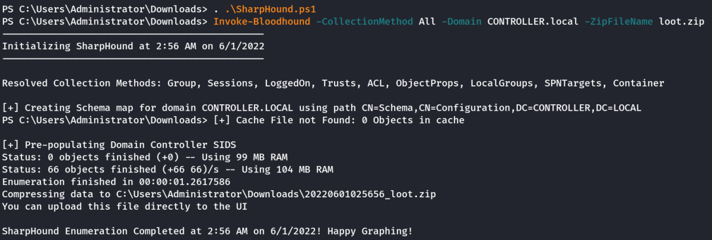Very Very Important Note:If we use the SharpHound.ps1 file provided in this room. The loot.zip will not work due to
compatibility issue. For the same to work, we need to install an old version of Bloodhound. (Tedious Task)
However, when I researched on the Bloodhound github, I found the latest
SharpHound 1.0.3 that is compatible with the latest Bloodhound.
But no ps1 format could be found. Thus I end up using the
SharpHound.exe executible from:
https://github.com/BloodHoundAD/SharpHound/releases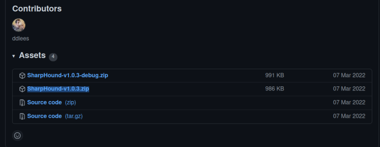Unzip the highlighted release and transfer the
SharpHound.exe file to the target windows machine using scp.
Note: Running the
executible is bit different than running the
ps1 file. Following is the syntax
Quit
Powershell and run it in
cmd.
SharpHound.exe --CollectionMethods All --domain CONTROLLER.local --ZipFileName loot.zipRemarks: The command is almost similar to that of
ps1 version. However, it uses
-- for all options and
CollectionMethod ---→
CollectionMethods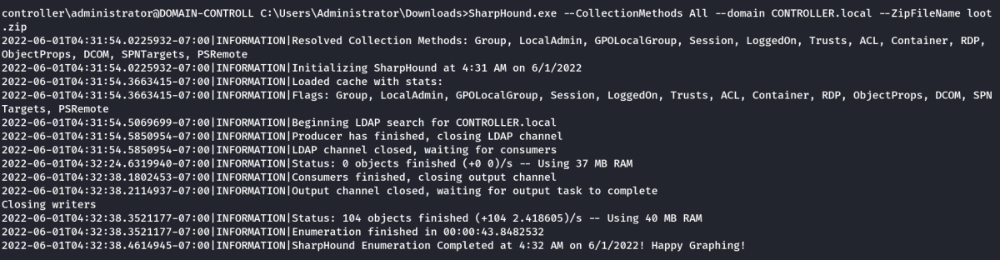4.) Transfer the loot.zip folder to your Attacker Machine
Note: you can use scp to transfer the file if you’re using ssh
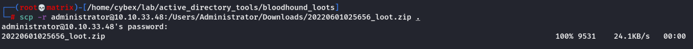Starting Neo4j console.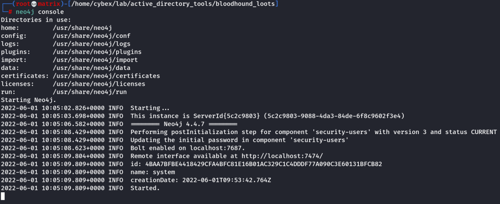Then Run Bloodhound.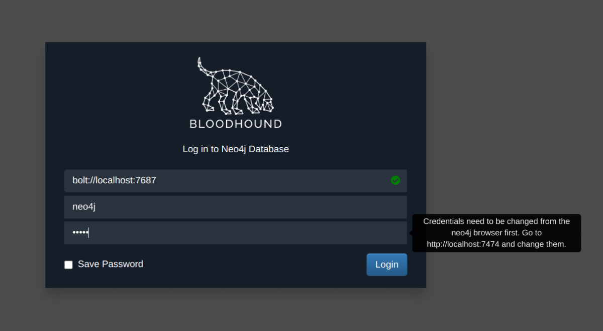Note: Upon first run of bloodhound, it asks us to change the password by going to
http://localhost:7474In the neo4j browser, we give the first console command (This command is entered by default)
:server connect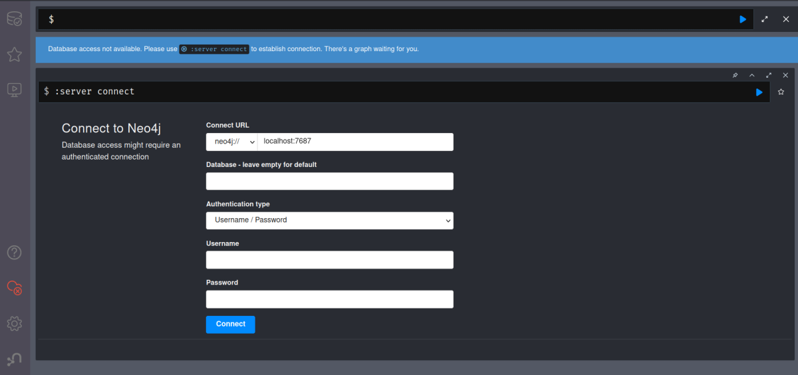We enter the default credentials here and are asked to change it.
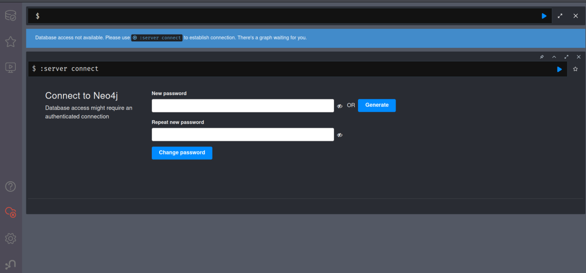Once Password is set. We can play around in Neo4j web browser.
To view help, use the command:help server
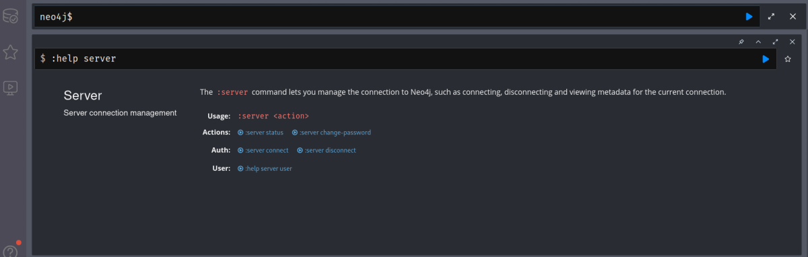To change Password:server change-password
Now, get back to Bloodhound and use the new set credentialsMapping the network with BloodHound1.) bloodhound Run this on your attacker machine not the victim machine
2.) Sign In using the same credentials you set with Neo4j
3.) Inside of Bloodhound search for
import icon 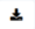 and import the loot.zip folder
Note: On some versions of BloodHound the import button does not work to get around this simply
drag and drop the loot.zip folder into Bloodhound to import the .json files
Or Click on the
upload icon 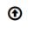 on right and upload the loot.zip
4.) To view the graphed network open the
Menu and select
Analysis this will give you a list of pre-compiled queries to choose from.
Eg, The queries can be as simple as
find all domain admins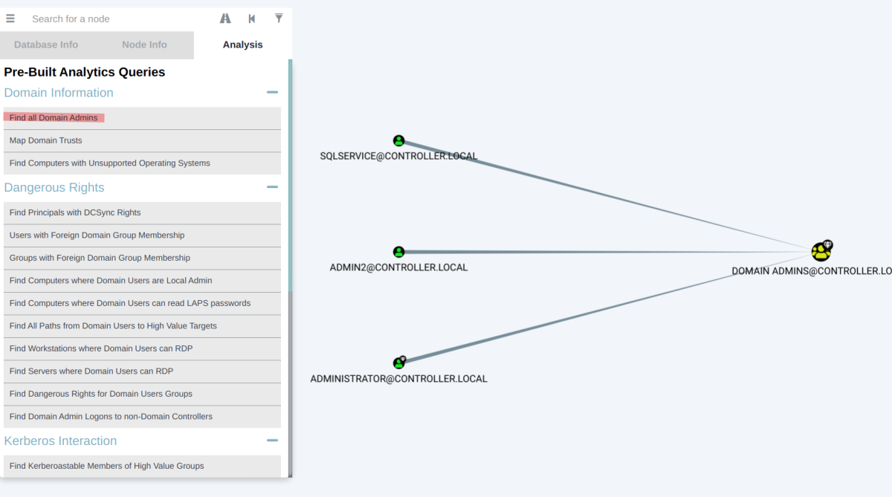Eg, The queries can be as complex as
shortest path to high value targets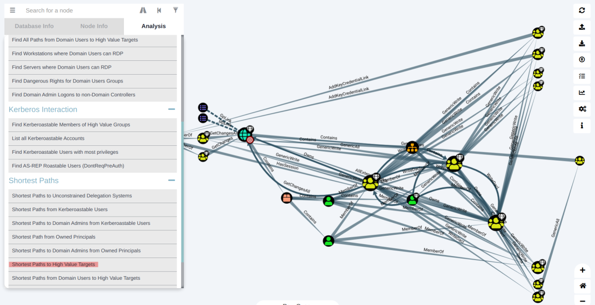